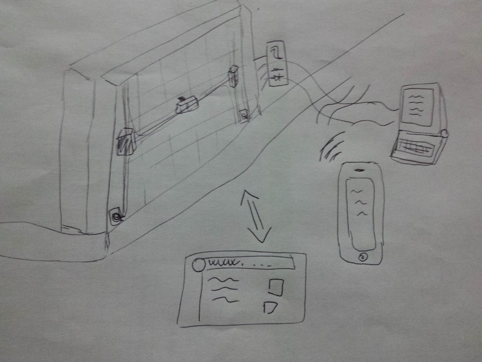
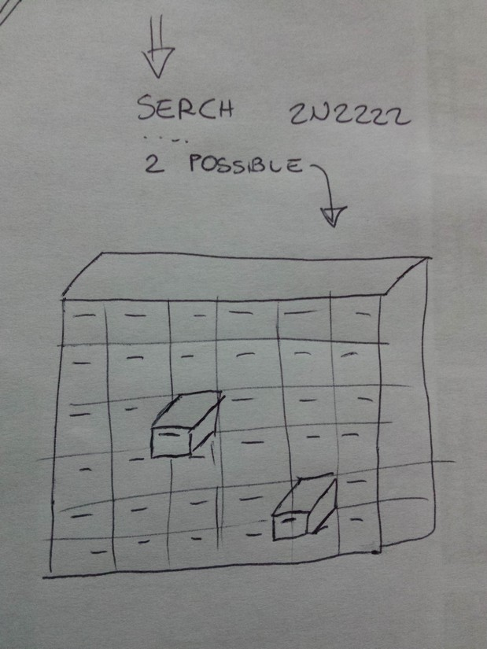

Robotic drawers opener
The robotic "assistant" that helps you find stored items
The Concept
The main idea of this project come from a real need that I have... something who helps me remember where I store all my electronic components, and all the small stuff I have in my personal laboratory.
I have a lot of small drawers' storage, and there is not a much space for write on them what they contains, and also if i did it, I waste a lot of time reading all the small write, in the process to find what I need. (even if I store methodically the items for application field).
So my purpose is to create a robotic drawers opener (a xy Crtesian mechanics behind the drawers) and a good software for finding what I need.
 Picture of a standard work-bench with a lot of drawers
Picture of a standard work-bench with a lot of drawers
The Way
The way I will develop my project is first build a Cartesian movement system to put behind the drawers, with a little actuator who can open the drawers, then I will make an electronic system to drive the motor to the precise position of the drawers.
Then i will focus on the software who will find the items and that tell to the electronic where they are; first of all I will make it “text based” (normal searching process), then I will try to make it more user friendly (some friend of mine tell me "you should project this in a way that your grandma can also use it" so I will try this).
Future steps will be make it modular in the dimension and size of the drawers used.
And more.....
For example you can see this schematic representation of what I mean

